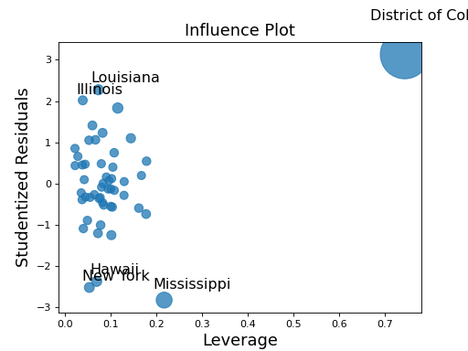

statsmodels.stats.outliers_influence.OLSInfluence.plot_influence¶
-
OLSInfluence.plot_influence(external=None, alpha=0.05, criterion='cooks', size=48, plot_alpha=0.75, ax=None, **kwargs)¶ Plot of influence in regression. Plots studentized resids vs. leverage.
- Parameters
%(extra_params_doc)external (bool) – Whether to use externally or internally studentized residuals. It is recommended to leave external as True.
alpha (float) – The alpha value to identify large studentized residuals. Large means abs(resid_studentized) > t.ppf(1-alpha/2, dof=results.df_resid)
criterion (str {'DFFITS', 'Cooks'}) – Which criterion to base the size of the points on. Options are DFFITS or Cook’s D.
size (float) – The range of criterion is mapped to 10**2 - size**2 in points.
plot_alpha (float) – The alpha of the plotted points.
ax (matplotlib Axes instance) – An instance of a matplotlib Axes.
- Returns
fig – The matplotlib figure that contains the Axes.
- Return type
matplotlib figure
Notes
Row labels for the observations in which the leverage, measured by the diagonal of the hat matrix, is high or the residuals are large, as the combination of large residuals and a high influence value indicates an influence point. The value of large residuals can be controlled using the alpha parameter. Large leverage points are identified as hat_i > 2 * (df_model + 1)/nobs.
Examples
Using a model built from the the state crime dataset, plot the influence in regression. Observations with high leverage, or large residuals will be labeled in the plot to show potential influence points.
>>> import statsmodels.api as sm >>> import matplotlib.pyplot as plt >>> import statsmodels.formula.api as smf
>>> crime_data = sm.datasets.statecrime.load_pandas() >>> results = smf.ols('murder ~ hs_grad + urban + poverty + single', ... data=crime_data.data).fit() >>> sm.graphics.influence_plot(results) >>> plt.show()
